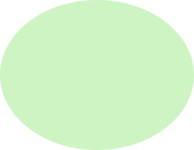
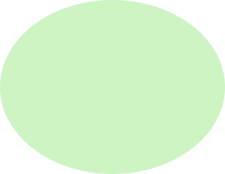

私について
メーカーの営業事務を1年経験しました。
スキルを活かした働き方をしたいと思うようになり、退職。
現在は、職業訓練校で、プログラミングとデザインを学んでいます。
こだに なつき
http://natsuki-kodani.com
©2023 Natsuki Kodani
 

2001年 5月5日 生まれ
出身地 / 鳥取
居住地 / 京都
私について
つくったもの
すきなもの
丸っこい動物が好きです。
特にカワウソにハマっていて、毎日YouTubeで推しカワウソの動画を見ています。
ビールが好きで、金麦をよく飲みます。
最近スパイスカレーにハマっていて、自分でも作るようになりました。
読書や音楽が好きです。
雰囲気のいい本屋さんに行ったり、
大阪・京都のライブハウスにライブを見に行っています。
海や湖を眺めるのが好きで、よく一人で眺めに出かけます。
一人旅で行った小豆島の海が、穏やかでとてもきれいでした。